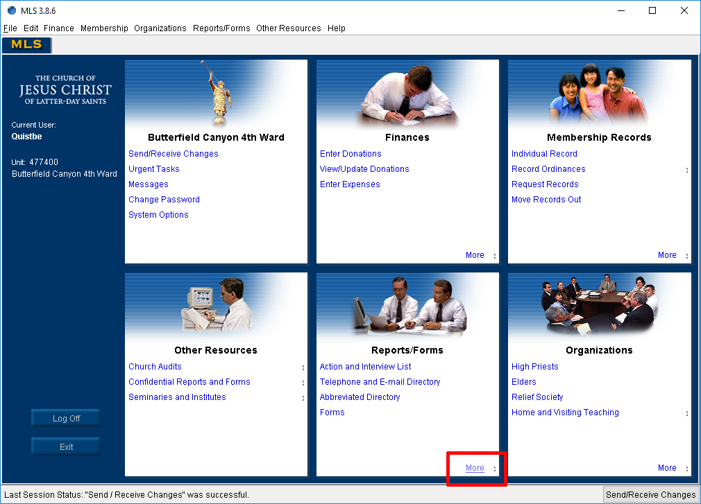
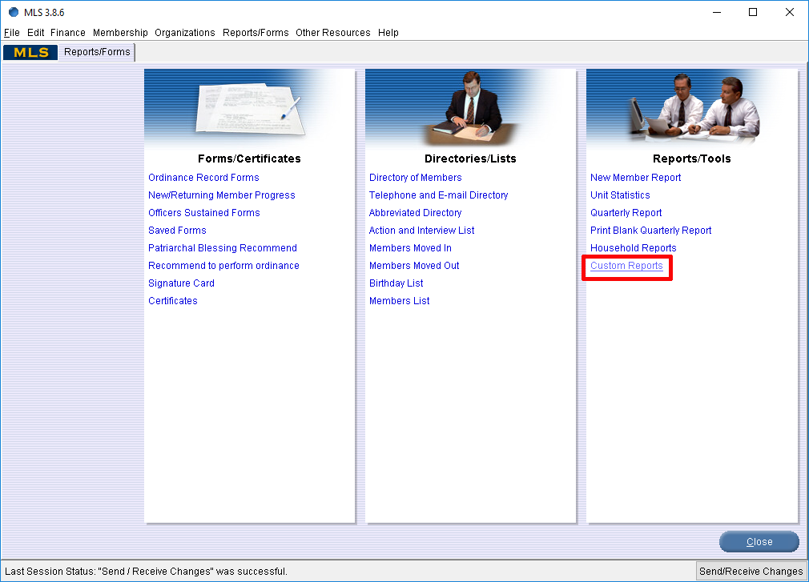
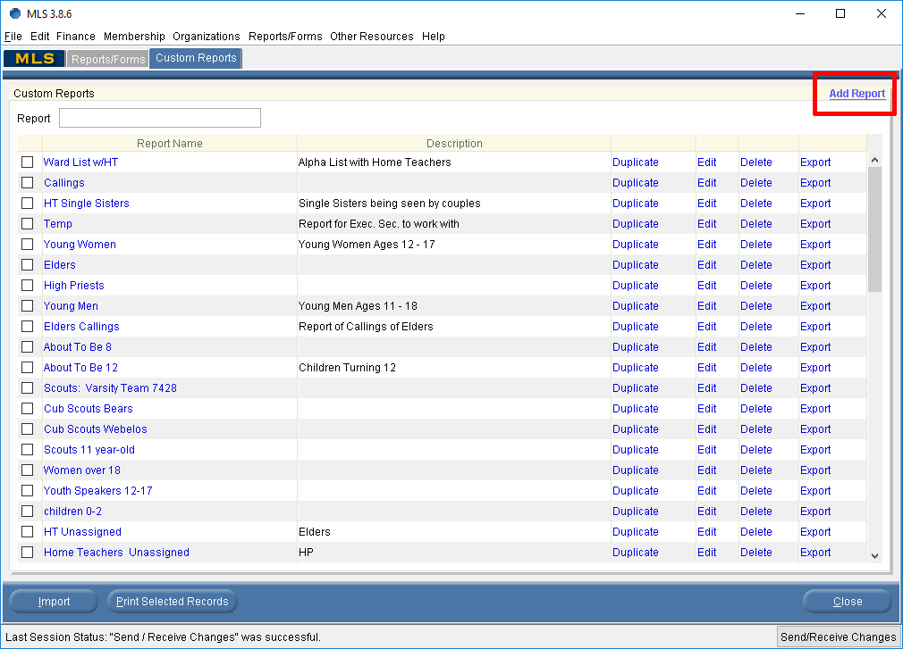
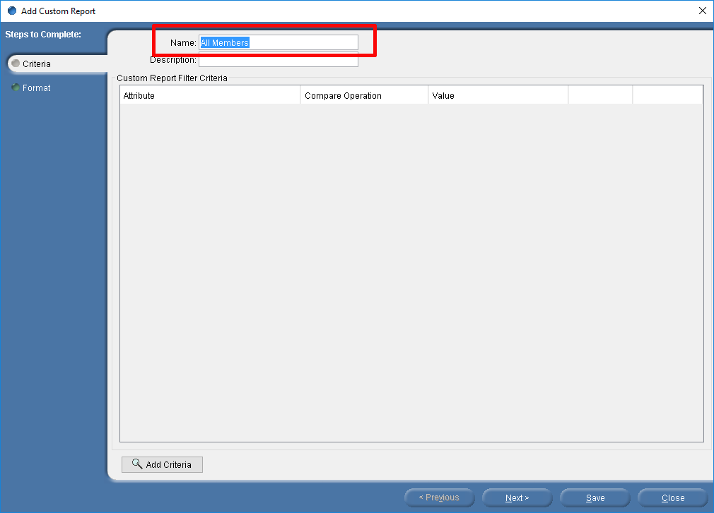
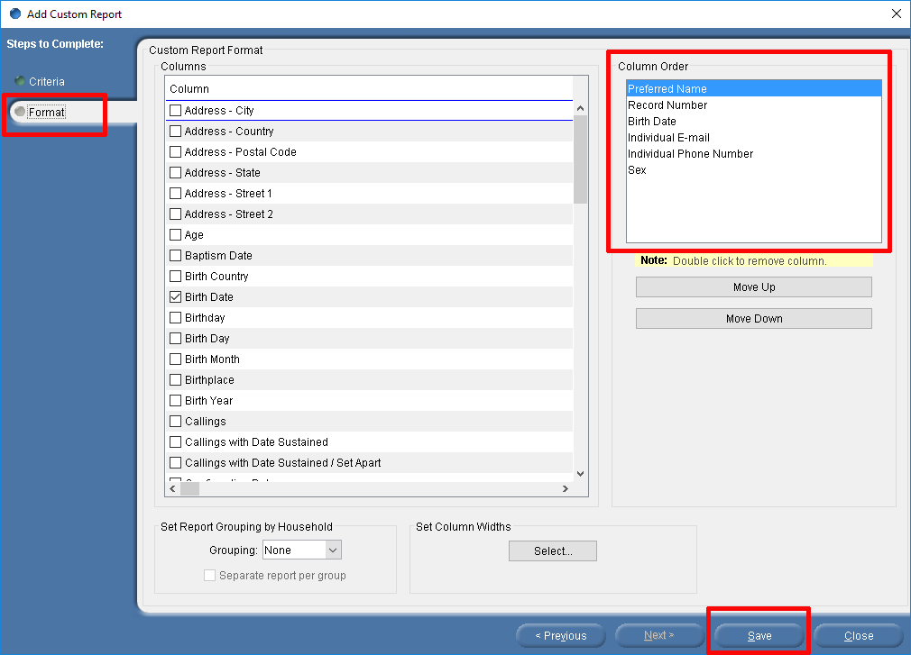
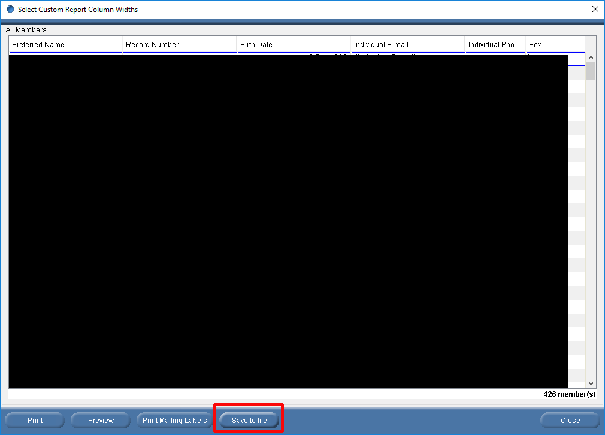
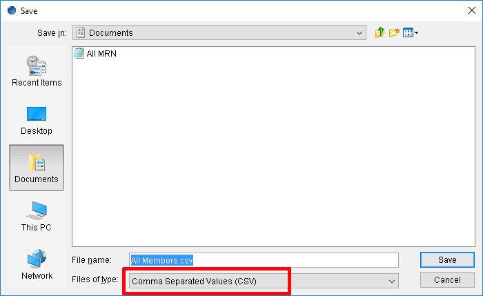

Login to MLS and click on "More" under the "Reports/Forms" section.

Under "Reports/Tools" click on "Custom Reports".

In the top right corner of the "Custom Reports" tab, click on "Add Report".

Give the report a name (doesn't matter what name you give it).

Click on the "Format" tab to the left. In the "Columns" section, add the following columns then click "Save":
Preferred Name
Record Number
Birth Date
Individual E-mail
Individual Phone Number
Sex

Open the report you just created (I hope you remember what you named it) and click on "Save to file".

Save the file as a CSV.

When you need to update member information, you may go back to this same report and upload the file or you can
update the member's info individual by going to the "Members" tab.